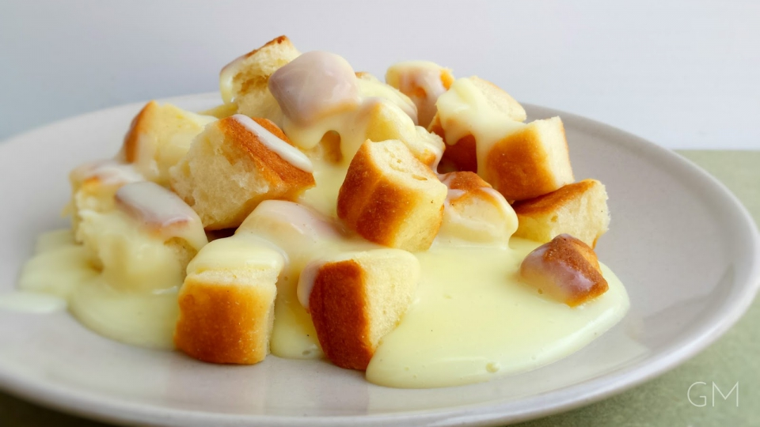

Nadýchané buchtičky s jemným vanilkovým krémem – tradiční český dezert.
Droždí rozdrobíme do hrnku, zalijeme částí vlažného mléka, přidáme cukr a necháme v teple vzejít.
Rozpustíme máslo a necháme ho vychladnout.
Všechny ingredience smícháme (mléko přiléváme podle potřeby) a vypracujeme těsto, které dáme kynout.
Z vykynutého těsta tvarujeme malé buchtičky a klademe je vedle sebe do máslem vymazaného pekáče. Mezi sebou je potíráme rozpuštěným máslem, aby se neslepily.
Těsto necháme ještě asi 30–45 minut vykynout, pak pečeme v troubě vyhřáté na 180–200 °C asi 30–35 minut dozlatova.
Krém: Do kastrůlku nalijeme smetanu s mlékem, přidáme nastrouhanou citrónovou kůru a rozříznutý vanilkový lusk, ze kterého vyškrábeme zrníčka. Na nejnižším plamenu ohříváme asi 10 minut.
V míse vyšleháme žloutky s cukrem do pěny. Pomalu a za stálého míchání přiléváme svařené vanilkové mléko, aby se krém nesrazil.